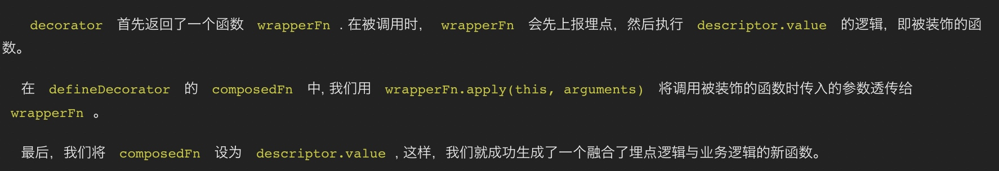

头条的前端埋点
https://mp.weixin.qq.com/s/QanYnjRN5TM_NlJtQzCALg
先明确埋点分类，头条定义了两种类型埋点，一种是页面事件，另一种是触发事件。
前者又包括两部分，一种页面级别的，一种元素级别的埋点。对应于阿里的页面埋点和曝光埋点。
页面事件
页面级别
页面在前端的定义中以location.pathname区分
页面级别可以统计页面的可见时间和活跃时间
可见的判断标准：（visible）页面在当前浏览器的 viewport 中，且浏览器窗口未被最小化；（invisible）页面不在当前浏览器的 viewport 中，或因浏览器最小化导致其无法被看到。
活跃的判断标准：（active）用户在网页中有活动（例如鼠标、键盘活动及页面滚动等）；（inactive）用户在网页中没有任何活动。
web lifecycle
问题
- 单页面应用
history或hash路由变化切换，页面不会重载。需要补偿页面termiated逻辑等。 - discard状态无法上报数据
解法：提前做持久化存储localStorage（invisible时），visible时上报并清理，尽最大限度送出数据。
组件级别
两个问题
- 哪些组件要监控
- 怎样统计可见时间
哪些组件要监控
标记监控组件
为组件增加特殊标记属性monitor-pv data-monitor-pv（react 16仅支持data-自定义属性）
Ant Design等组件库可能会被组件过滤，DOM元素上不存在属性。
解法：babel插件，编译时再外层包裹一层
怎么监控
需要监听DOM变化
时机：不能DOM一变化就监控，性能受不了。所有DOM操作结束之后触发。
（注：退一步讲，如果做不了所有DOM结束后的回调，那么可以定时间隔触发，如每隔3s判一下有没有DOM变化）
怎样统计可见时间
- 页面可见
- 组件是否在viewport中
- 组件自身是否设置可见
- visibility: hidden
- display:none
- opacity:0
触发事件
类指令
最基础的，如通过monitor-click指令
// 指令式埋点示例
<Button
monitor-click={JSON.stringify({
type: "func_operation",
params: { value: 3 },
})}
Click Me
原理：
对当前document注册监听,监听hover click input focus
monitor会从target逐层向上查找，上层有同样指令则也上报。
问题：
- 数据处理不便
- 不是所有要上报的类型都能监听到
- 上报时机自由度不好控制（说到底还是前两条的因素）
装饰器
（前方对客户端来说高能）
// @monitorBefore 使用示例
@monitorBefore((value: string) => ({
type: 'func_operation',
params: { keyword: value },
}))
handleSearch() {
console.log(
'[Decorators Demo]: this should happen AFTER a monitor event is sent.',
);
}
return (
<AutoComplete
onSearch={handleSearch}
/>
)
monitorBefore是一个高阶函数，即返回值是一个函数。具体可以参考JS的装饰器，返回值的形式很固定(target: object, name: string, descriptor: object)=>{return newDescriptor}，这样就最后执行newDescriptor.value()，在这里最后是执行this.defineDecorator
// monitorBefore 函数源代码
monitorBefore = (event: MonitorEvent) => {
return (target: object, name: string, descriptor: object) =>
this.defineDecorator(event, descriptor, this.before);
};
入参是event（可函数可对象）
重点看下 this.defineDecorator(event, descriptor, this.before);
// defineDecorator 函数源代码
before = (event: MonitorEvent, fn: () => any) => {
const that = this;
return function (this: any) {
const _event = that.evalEvent(event)(...arguments);
that.sendEvent(_event);
return fn.apply(this, arguments);
};
};
defineDecorator = (
event: MonitorEvent,
descriptor: any,
decorator: (event: MonitorEvent, fn: () => any) => any
) => {
// 注意event不仅仅可以是obejct哦
if (isFunction(event) || isObject(event) || isArray(event)) {
// 里面就是具体的事件上报逻辑，同时还不能把原descriptor.value落下
const wrapperFn = decorator(event, descriptor.value);
// 这里只是传一下arguments做了个合并
function composedFn(this: any) {
return wrapperFn.apply(this, arguments);
}
// newDiscriptor诞生
set(descriptor, "value", composedFn);
return descriptor;
} else {
console.error(
`[Monitor SDK @${decorator}] the event argument be an object, an array or a function.`
);
}
};
monitorBefore = (event: MonitorEvent) => {
return (target: object, name: string, descriptor: object) =>
this.defineDecorator(event, descriptor, this.before);
};

react钩子
useMonitor
// useMonitor 源代码
useMonitor = (fn: () => any, event: MonitorEvent) => {
if (!event) return fn;
const that = this;
return function (this: any) {
const _event = that.evalEvent(event)(...arguments);
that.sendEvent(_event);
return fn.apply(this, arguments);
};
};